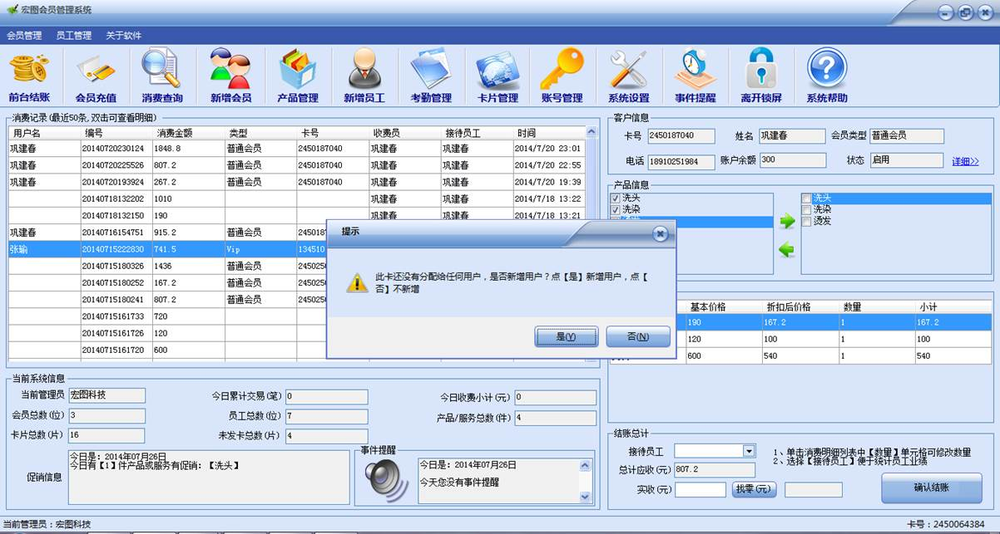
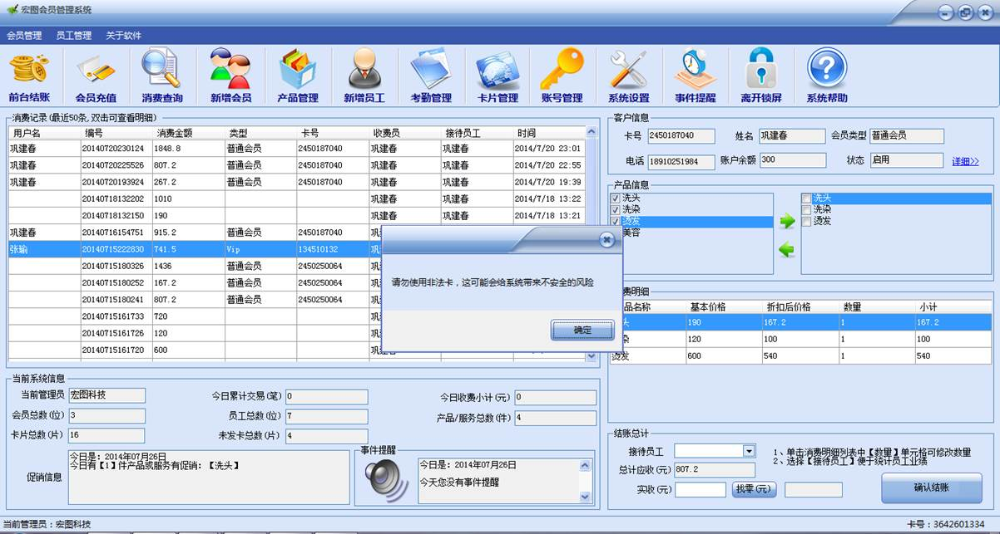
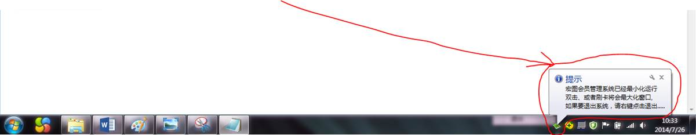

1、 当某个卡片已经发放出去，就不能再发放给另外一个会员；
2、 当某个卡片未经过系统发放，直接刷卡系统会提示“此卡没有分配给任何会员，是否新建会员”，如下图所示：

3、 当某个卡没有导入系统卡库，或者其他非法未经授权的卡被读入系统后，会提示“非法卡”，系统会主动拒绝，如下图：

4、 退出系统、切换账号、打开主界面
点击系统主界面右上角的关闭按钮，系统不会退出和关闭，会最小化到右下角的任务栏中，并提示相关信息，如下图所示：

此时要激活并打开系统主界面，只需要双击下面图标即可，也可以在图标上右键，如下图所示：

点击【打开】系统主界面会最大化，此菜单上还有【切换账号】、【退出】
Ø 切换账号：当一个管理员登陆之后，要交接班，或者切换为另一个管理员的账号时，点击此按钮，系统会自动退出当前登陆，并进入登陆窗口，要求输入要切换到的账号。
Ø 退出：要退出宏图会员系统，只能通过点击此按钮退出。
5、 激活主界面：除了管理员右键点击打开（见上面步骤4）之外，只要有刷卡操作，系统也会自动弹出，并最大化以激活主界面。